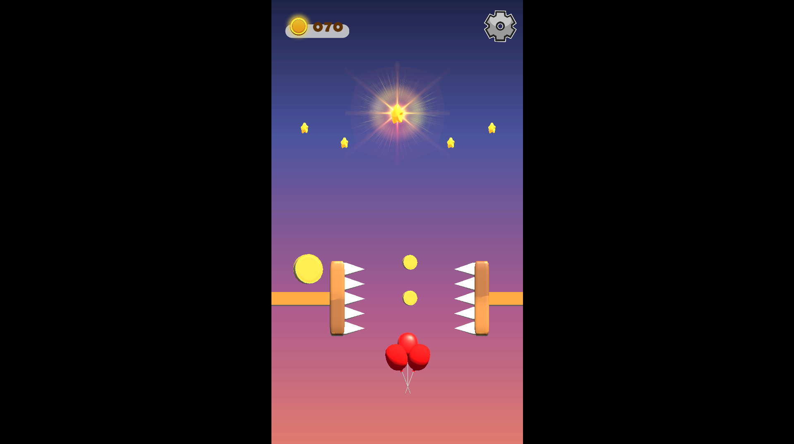
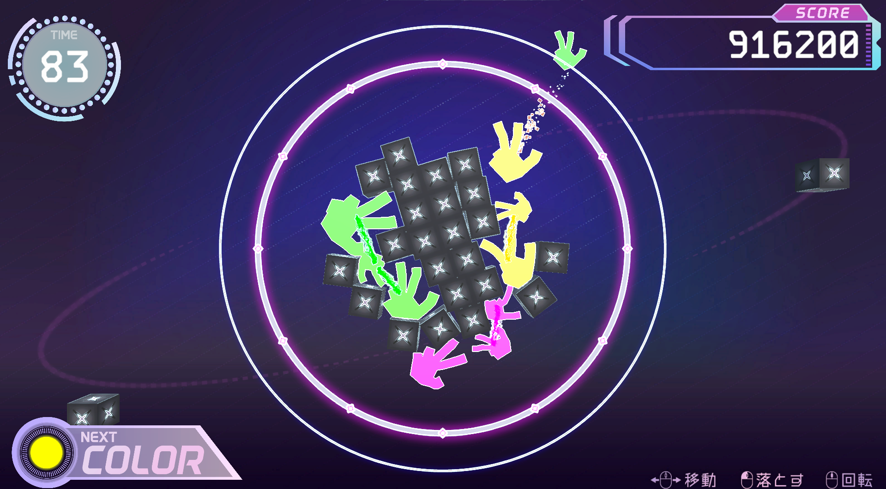
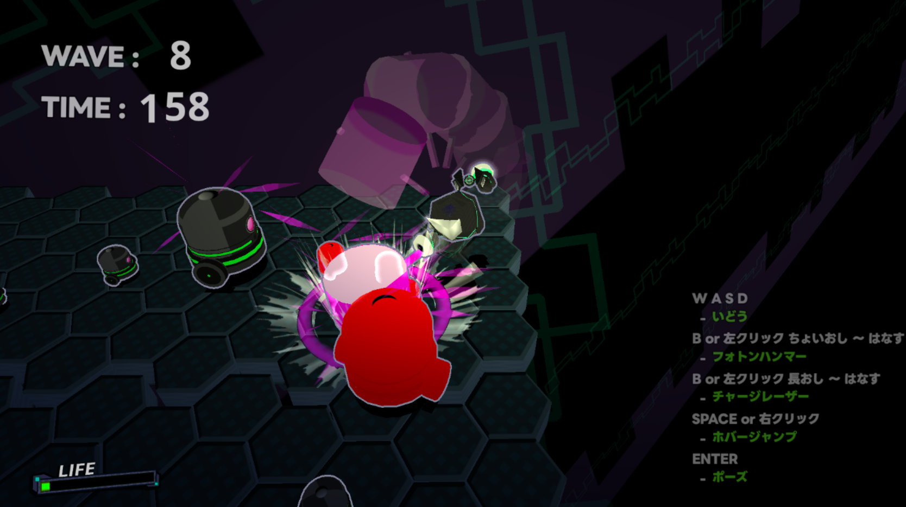
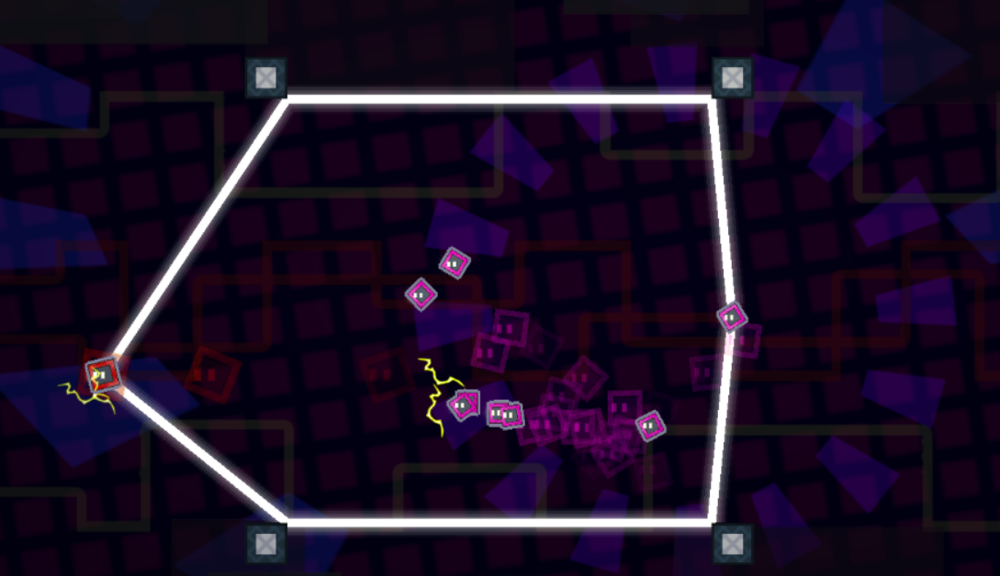
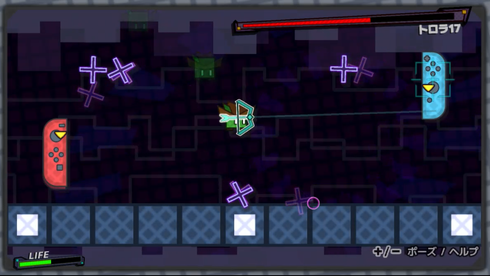
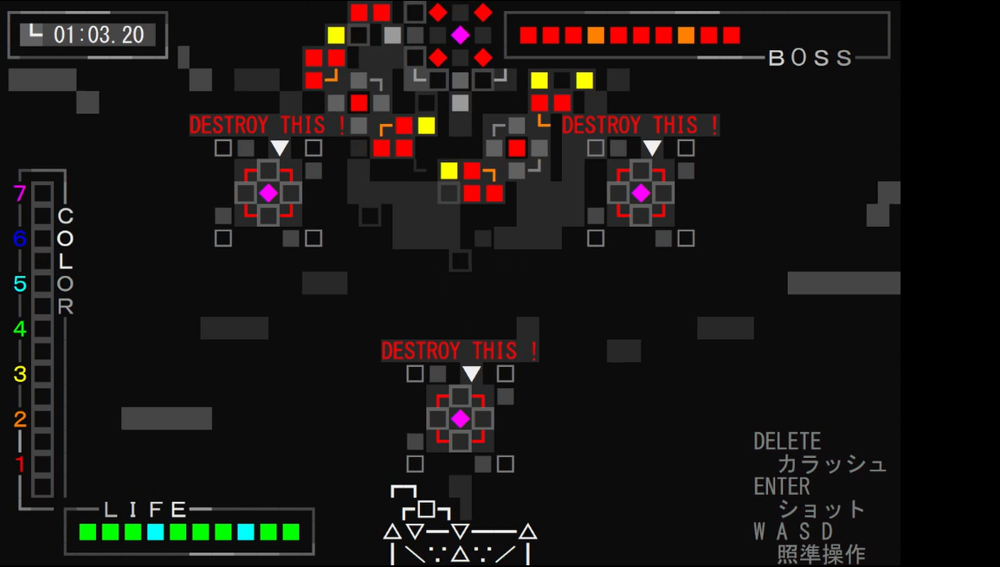
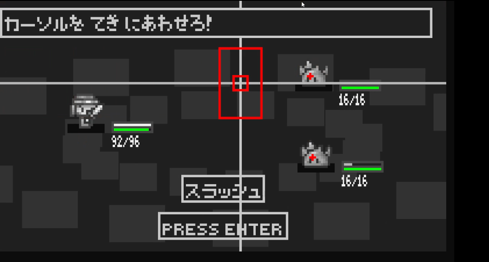
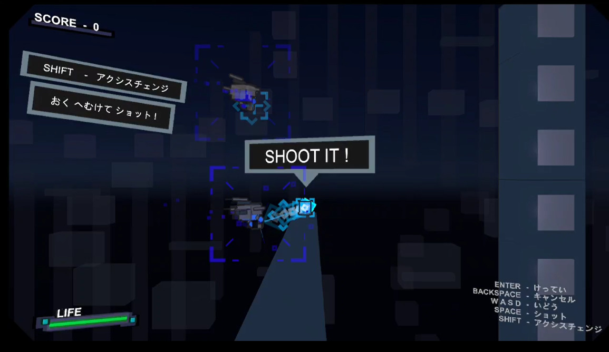
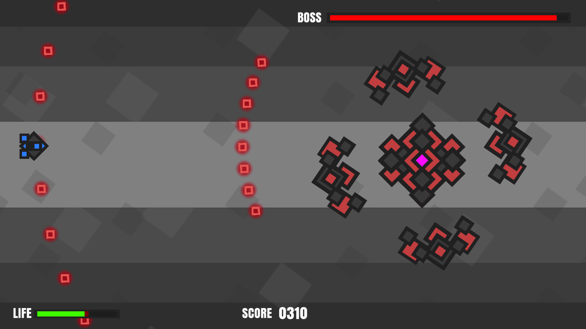

PopLess
チーム制作
プレイ可能
チーム制作
C#
Unity
2Dアクション
インターン
モバイルゲーム開発に挑戦/インターン
制作時期 / 期間
2025年 10月 / 1ヵ月
役割
プログラマー (このゲームのプログラムをすべて担当)
制作人数
3 人
障害物を避けて風船を天まで届けるハイパーカジュアルゲームです。
インターンで、プログラマー2名・デザイナー1名の3人チームとしてモバイル向けゲームを2本開発し、
そのうち1本の全プログラムを単独で担当しました。
これまで経験のなかったモバイル開発に取り組み、実装から公開までの一連の流れを実務として経験。
短期間で仕様を形にする力と、モバイル特有のUI・操作性への理解を深めることができました。
作品をプレイ: UnityRoom

オシテリア
チーム名：四光 -しこう-
チーム制作
C#
Unity
外部コンテストノミネート
パズル
ゲームジャム
外部コンテストに挑戦/神ゲー創造主レボリューション
制作時期 / 期間
2025年 3月 / 10日
役割
ゲームプログラマー (連鎖のアルゴリズム、演出)
制作人数
4 人
PCカメラで手の形を認識し、それを落としてつなげる円形落ちものパズルです。
学内ゲームジャムで10日間の短期開発に挑み、連鎖アルゴリズムや演出周りを担当しました。
後に「神ゲー創造主レボリューション」に提出し、一次選考ノミネートまで進みました。
動画: 準備中

ExtendsMachina
個人制作
個人制作
C++
DirectX11
受賞済み
3Dアクション
行列計算、3D空間での制御に挑戦
進級制作展に向けた技術検証として、短期間で3Dアクションのプロトタイプを制作しました。
2Dでは扱わなかった行列計算や3D空間での制御を集中的に学び、以降の3Dゲーム開発に必要な基礎を固めることができました。
本作は2024年度冬の学内コンテストで金賞を受賞しています。
動画: 準備中

スピレクション
チーム制作
チーム制作
C++
DirectX11
イベント内人気投票1位
2Dアクション
ゲームジャム
バージョン管理、ソース共有の実践的な運用
制作時期 / 期間
2024年 12月 / 2日
役割
リードプログラマー（プロトタイピング、インゲーム調整）
制作人数
3 人
テーマ「はる」の学内ゲームジャムで、ロープの反動を利用して敵に突撃する2Dアクションを2日間で制作しました。
リードプログラマーとしてプロトタイピングからインゲーム調整まで担当し、GitHubを用いたバージョン管理やソース共有の実践的な運用を学びました。
短期間ながらゲームとしての面白さを形にでき、イベント内の人気投票で1位を獲得しました。
動画: 準備中

フットバス
個人制作
プレイ可能
個人制作
C++
DirectX11
アクションパズル
ジャンルを超えて自身の強みを活かす
落ちものパズルの課題制作として、衝撃波でブロックを吹き飛ばすアクション性のあるパズルゲームを3日間で開発しました。
自分の得意な“操作感の気持ちよさ”をパズルに落とし込むため、従来の落ちものとは異なるシステムを考案。
過去の個人制作で構築したアセットや基盤コードを活用し、短期間でも完成度のある形にまとめました。
作品をプレイ: 作品をダウンロード

ウッチャ～
個人制作
プレイ可能
個人制作
C言語
C++
Nintendo Switch
DirectX11
受賞済み
2Dアクション
重力を含むアクション挙動の実装に挑戦/コンシューマ開発
弓で敵を撃ちながら進む2Dアクションゲームを、Nintendo Switch向けに1ヵ月で開発しました。
これまで制作してきたシンプルなシューティングから一歩進め、重力を含むアクション挙動の実装に挑戦。
DirectX11との互換性を意識した設計により、軽いマルチプラットフォーム対応も視野に入れた開発を行いました。
本作は2024年度夏の学内コンテストで金賞を受賞しています。
作品をプレイ: 作品をダウンロード(DirectX版)

クラッシュカラッシュ
個人制作
プレイ可能
個人制作
C言語
Windows Console
受賞済み
シューティング
制約の中で見栄えと気持ちよさを両立
80×25という限られたコンソール画面で、爽快感のある一人称シューティングを2週間で制作しました。
敵を倒して色を集め、ゲージで一気に殲滅するシステムを軸に、制約の中でも見栄えと気持ちよさを両立できる表現を追求しました。
本作は2023年度進級制作展で銀賞を受賞しています。
作品をプレイ: 作品をダウンロード(オリジナル/DirectX版)

なめばとら～ん
個人制作
プレイ可能
個人制作
C言語
Windows Console
アクションコマンドバトル
60FPSのゲームループの実装に挑戦
制作時期 / 期間
2023年 12月 / 1ヵ月
コンソール環境で60FPSのゲームループに挑戦し、
タイミング入力を取り入れたアクションコマンドバトルを制作しました。
アニメーションやエフェクト、ターン制ロジックの実装を通して、
基礎技術とゲーム設計の感覚を身につけました。
作品をプレイ: 作品をダウンロード(オリジナル/DirectX版)

OKUUTE
個人制作
個人制作
C#
Unity
受賞済み
シューティング
自身の強みを確立
制作時期 / 期間
2023年 12月 / 2週間
横スクロールシューティングに「奥方向へ撃てる」操作を加え、短期間で個性あるゲーム性を設計しました。
この制作を通してC#でのゲーム開発に本格的に取り組み、ヒットストップやカメラシェイクなど“手触り”を高める演出実装を習得。
本作は2023年度冬の学内コンテストで銀賞を受賞しています。
動画: 準備中

UTEYOKE
個人制作
個人制作
Visual Scripting
Unity
受賞済み
シューティング
初めてゲームを最後まで形にした
初めてゲームを最後まで形にした作品で、UnityのVisual Scriptingを用いて横スクロールシューティングを1週間で制作しました。
コードを書かずにゲームロジックを構築する過程で、処理の流れやゲームの基本構造を理解し、完成までのプロセスを実践的に学びました。
本作は2023年度夏の学内コンテストで技術力賞を受賞しています。
動画: 準備中